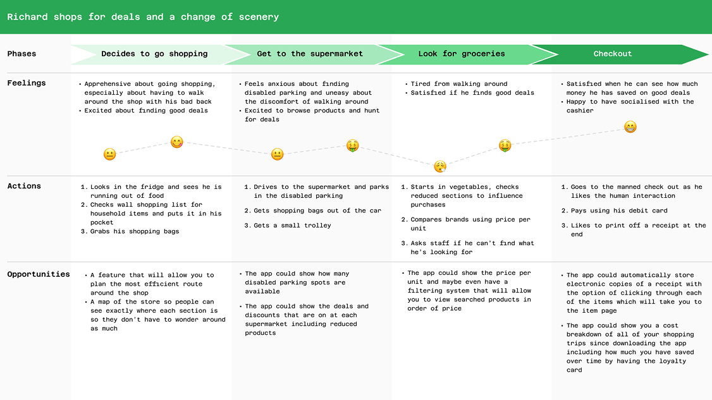
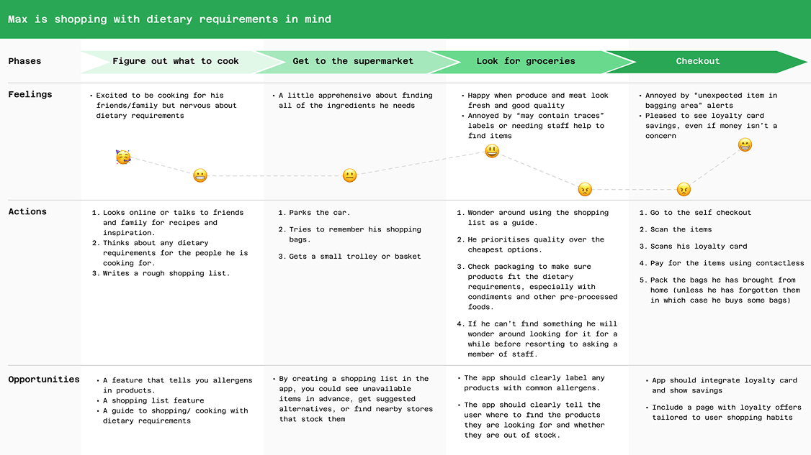
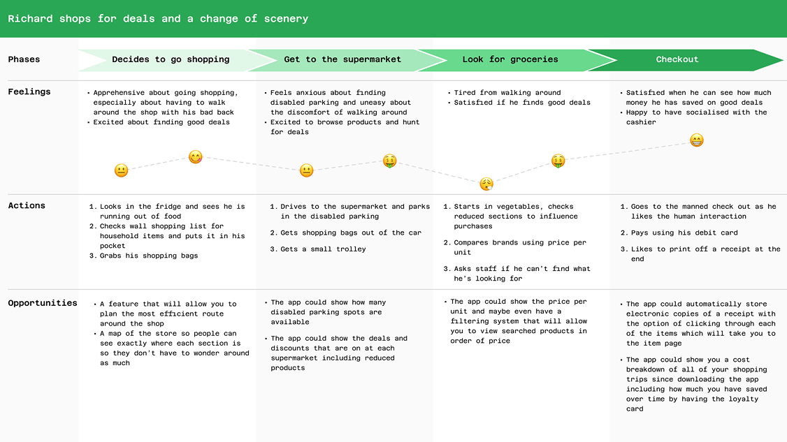
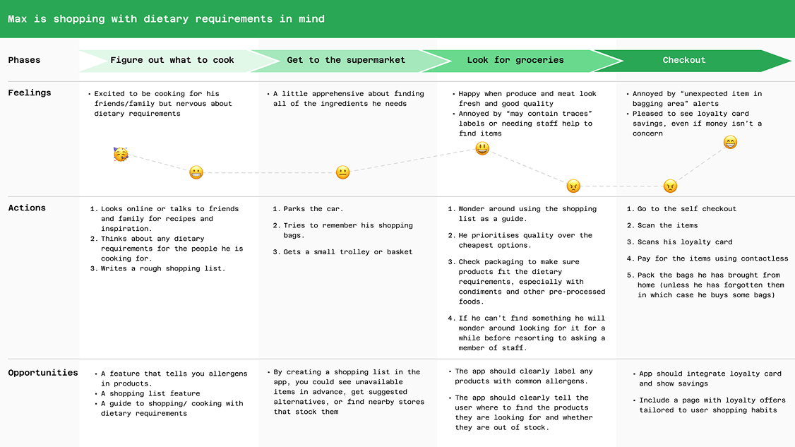
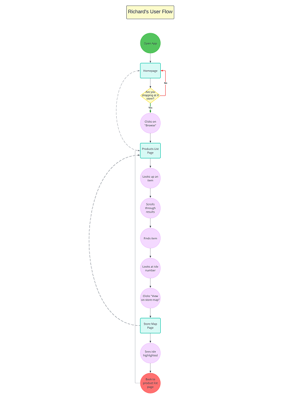
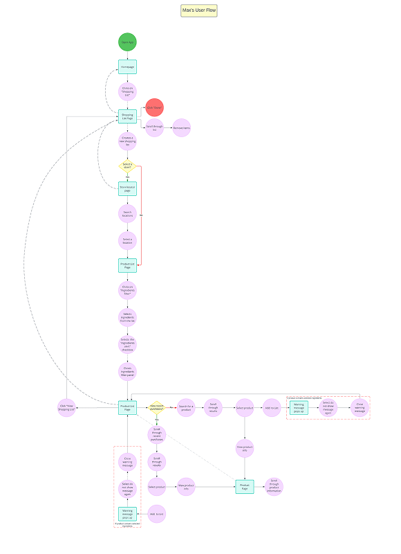
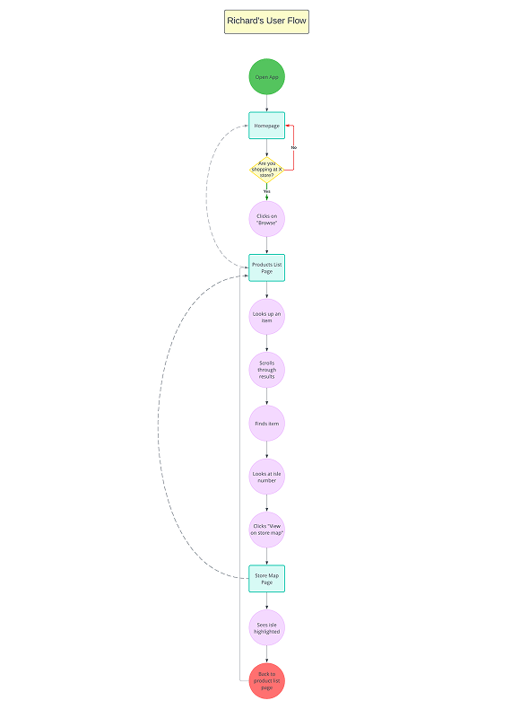
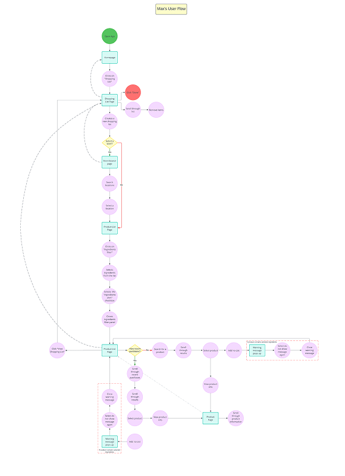

Sensco App
Designing an e-commerce app for a supermarket
UI/UXThe Sensco app is an e-commerce app for a medium sized supermarket chain. The app has two core functions; to allow users to order their groceries online and to assist customer’s shopping in store through features like an interactive store map, smart shopping list and stock availability.I designed this app as part of Google’s UX Design Certificate.
View hi-fi prototypeUser Research
User Interviews
I kickstarted the project by conducting user interviews to find out people’s shopping habits and to understand any frustrations they encounter. As it was my first time conducting user interviews, I recruited my friends and family and interviewed four participants.
I asked them the following questions:
- What does grocery shopping look like for you?
- Can you talk me through the steps you take when you shop for groceries?
- Are there any challenges or frustrations you experience while grocery shopping?
- Do you ever struggle to locate products in a shop? Why do you think that happens? How does that make you feel?
- Talk me through the steps you would take if you were struggling to find something.
The research was useful as it allowed me to empathise with various users and get a feel for how different people go about doing their shopping. From this data I created user personas to represent different user segments.
User Personas
Below you can see the three user personas I created.


User Journey Maps
Based on the user personas I created user journey maps to further empathise with their shopping experiences and to think about arising pain points and how to address them.
 



Problem & Hypothesis Statements
Creating problem and hypothesis statements allowed me to summarise the user personas’ goals and potential solutions to help them achieve them.

Julie is a busy project manager who wants to do her grocery shopping efficiently because she wants to maximise her free time at home. If Julie uses the supermarket’s app she can write a shopping list and plan an efficient route through the supermarket which will save her time.
Richard is a retiree with a bad back who likes going shopping because it gets him out of the house but needs an efficient way to find things because he lacks mobility and tires easily. If Richard uses the supermarket app he can look up the location of items and see a map of the supermarket which will allow him to find things easier.
Max is a young professional who likes cooking for his friends and family and needs a way to easily identify products that contain common allergens in supermarket products when he goes shopping because some of his dinner guests have dietary requirements. If Max downloads the supermarket app he can easily check whether a product contains any common allergens.
Market Research
Competitive Audit
I conducted a competitive audit to find and analyse competitors apps and websites. This allowed me to identify gaps in the market and get a feel for what elements work well and things to avoid in my own designs.
In Summary
- Tesco was the only website that included store-specific information such as stock availability and product location.
- Some websites included shopping list features but they weren’t very intuitive.
- I was surprised by the number of websites that weren’t screen reader friendly
- None of the websites included a store map feature.
Ideation
Crazy 8s
To kickstart the ideation process I used the crazy 8 method. For each user persona I divided a piece of paper into 8 sections and spent 1 minute drawing an idea down in each section. The ideas were based on the problem and hypothesis statements. Rapidly sketching out ideas allowed me generate loads of ideas without a filter and while some of the ideas were crazy there were some good ideas in there too.

User Flows
Based on the ideas generated through the crazy 8 exercise, I created user flows for each persona by imagining how they would interact with the app and mapping out how that would look. This helped me start to envision what the information architecture of the app might look like.
 



Storyboards
Based on the user flows I created user stories to bring the app to life and imagine it in a real world context.I created two storyboards for Max. One of them is a big-picture storyboard that looks at the situation that Max is using the app in and the other is a close-up storyboard looking at the UI.
Information Architecture
Based on the user flows I created user stories to bring the app to life and imagine it in a real world context.I created two storyboards for Max. One of them is a big-picture storyboard that looks at the situation that Max is using the app in and the other is a close-up storyboard looking at the UI.
Lo-Fi Designs
Paper Wireframes
Creating paper wireframes allowed me to explore lots of different ideas with little effort or commitment. I created multiple versions of each of the key screens and narrowed down my ideas from there.
Digital Wireframes
The next step was to digitise the best of the paper wireframes using Figma. I decided to create a comprehensive set of wireframes that considered all aspects of the app including things like account settings because I believe it is important to approach app design holistically in order to create something that is truly user friendly.
Lo-fi Prototypes
The next step was to connect all of the wireframes together to create a lo-fi prototype. This allowed me to consider the functionality of the app before considering aesthetics.
Testing and Iterations
Moderated Usability Study
The next step was to test the low-fidelity prototype using a moderated usability study. The prototype was tested on four participants from different demographics.
Activities
- Find the checkout and place an order for delivery
- View a shopping list and find out what aisles the list of products are located on.
- Are there any challenges or frustrations you experience while grocery shopping?
- Find where you can update your payment information
- Select a store and find its store map.
Observations
It was observed that 4 out of 4 subjects had trouble figuring out how to locate the aisle numbers on the shopping list page.
This means that the aisle numbers were difficult to locate for all users.
It was observed that 2 out of 4 users confused the shopping list feature with the browse products section because these features look similar.
This means that half the users confused the shopping list feature with the browse products section.
It was observed that 2 out of 4 users confused the shopping list feature with the browse products section because these features look similar.
This means that half the users confused the shopping list feature with the browse products section.
It was observed that 2 out of 4 participants thought the payment information was located on the “change account details” page rather than the “payment wallet” page.
This means that half of the users might struggle to find where to update their payment information.
Iterations
Based on the usability study results I made some changes to the designs.
Hi-Fi Designs
Mock Ups
After the testing was complete I started thinking about the aesthetics of the website. I chose green as the main colour for the brand because green has connotations of nature, freshness and wellbeing which are suitable for a supermarket brand. You can read more about design considerations in the Design System section. Below you can see some examples of the mock ups I made.
Design Systems
Design System
This project was a great opportunity to familiarise myself with design systems. Towards the end of the project I started reading a book called “Laying the Foundations” by Andrew Couldwell which opened my eyes up to the benefits of creating Design systems and how to go about creating them and maintaining them. The design system I created isn’t the most comprehensive but it served its purposes in making the designs for the app consistent and scalable.
What I Learned
I learned a lot of valuable lessons from this project. I won’t outline them all as I don’t want to bore you to death so below I have listed three key lessons I have learned:
Make sure to interview relevant people and more of them...
While I did interview a wide demographic of people albeit only four of them none of them used grocery shopping apps much so even though I got some valuable insights into people’s shopping habits I could have done with more insights into people who use grocery apps.
Naming conventions are difficult to maintain but incredibly useful...
Throughout the project I kept struggling to name things so I started looking into naming conventions and best practices and tried to stick with one (Although I kept changing my mind about which ones to use...) I haven’t completely mastered the art of naming conventions yet but I am getting there...
Start creating UI libraries and a design system as early as possible...
The sooner you think about these things the more efficiently you can design things and the more organised you can be about it.